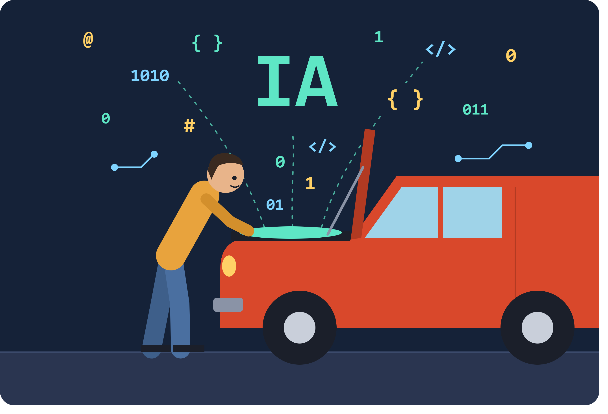
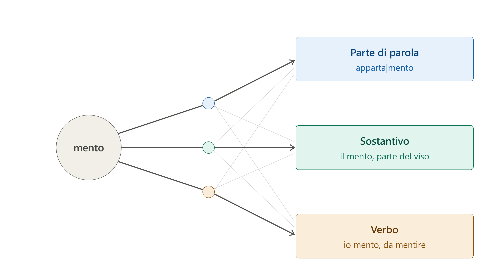
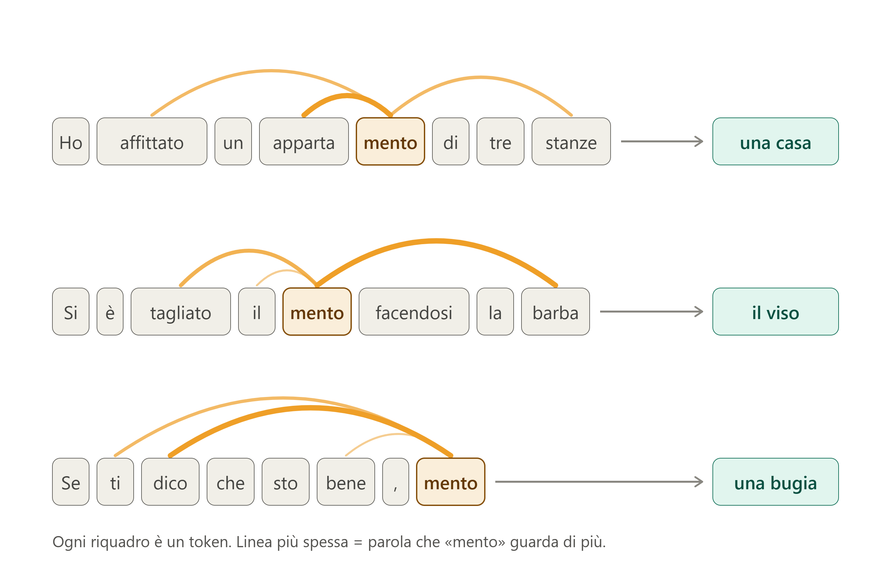
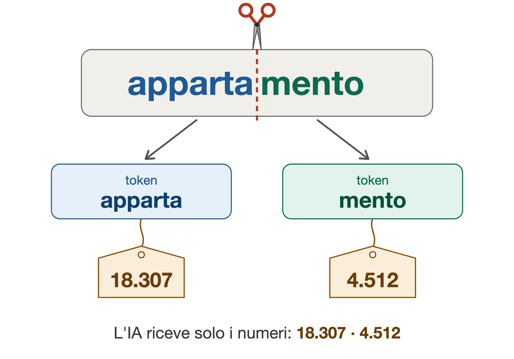
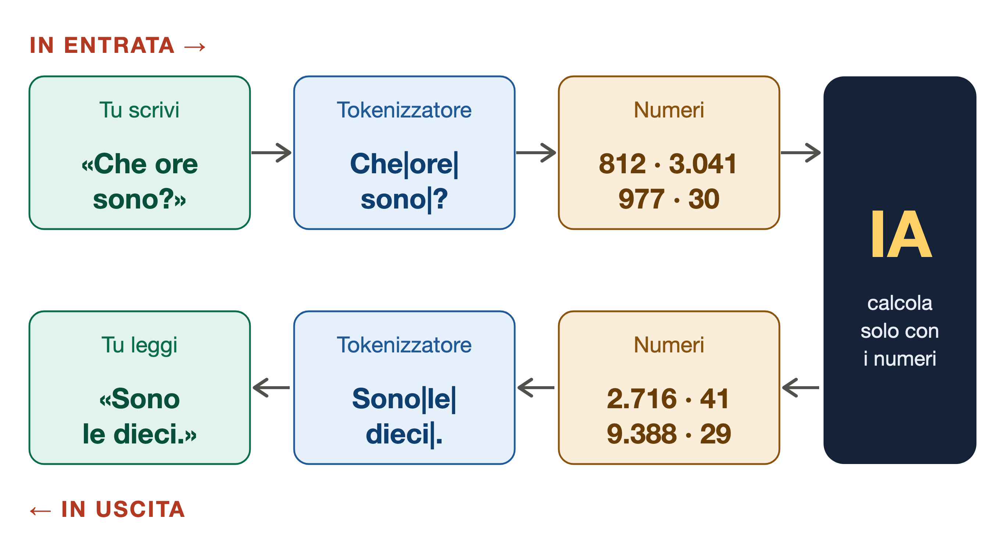
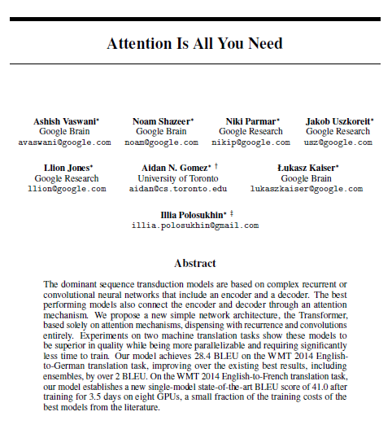
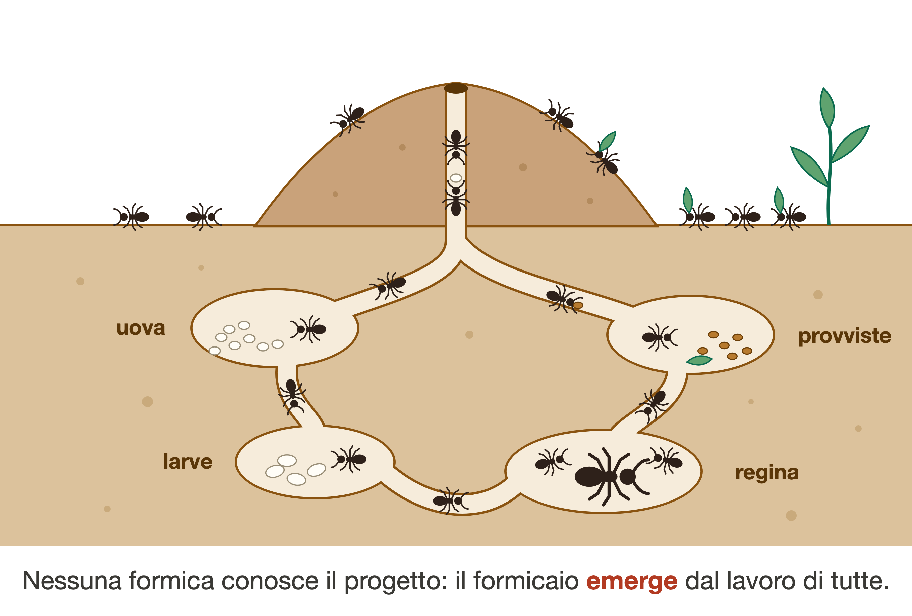

Per saperne di più
Il perché è molto semplice: tutti i giorni leggiamo o ascoltiamo decine di notizie sull’Intelligenza Artificiale (IA), allarmi, cifre da capogiro, annunci da “fine del mondo” o, all’opposto, promesse di soluzioni ai grandi problemi del nostro tempo. Ma è molto difficile trovare una fonte che provi a spiegarci cosa c’è davvero “sotto il cofano” (under the hood direbbero gli americani). Questa scarsa conoscenza è il terreno migliore per coloro che hanno un forte interesse personale o aziendale nella propagazione di notizie che hanno scarso o nessun fondamento.
La complessità del tema rappresenta certamente un grosso ostacolo.
Nell’IA c’è molta matematica e ingegneria informatica, materie per pochi
esperti. Ma non è del tutto impossibile cercare di spiegare in modo
divulgativo, a grandi linee ovviamente e con esempi molto semplificati,
ciò che accade quando discutiamo con Gemini o con ChatGPT. In ogni caso,
vale la pena fare un tentativo.
Cercheremo poi di raccontare come è nata l’IA e di riassumere alcuni dei
temi che sono oggetto di dibattito quotidiano.

Questa pagina è stata scritta a partire dalla consultazione di diverse pagine web, di chat diverse IA (Gemini, ChatGPT, Claude) e grazie ad un libro di Stefano Quintarelli (con Emil Abirascid) dal titolo La bolla dell’intelligenza artificiale (editore Bollati Boringhieri, settembre 2026), di cui si consiglia la lettura a tutti gli interessati. Il layout della pagina (cioè il codice html e css che c’è dietro quello che state leggendo) è stato scritto da Claude sulla base delle indicazioni fornite dall’autore. Anche le immagini sono state elaborate da Claude.
Partiamo dalle basi. Detto in maniera estremamente semplificata, l’IA che usiamo nelle chat è una elaborazione statistica di frammenti di parole. Non “parole”, si badi bene, ma frammenti di parole. Obiettivo: costruire frasi di senso compiuto calcolando il frammento più probabile. Uno dopo l’altro e uno alla volta.
I frammenti vengono definiti token, un termine entrato ormai nell’uso comune.
Facciamo subito un esempio. Usiamo la parola appartamento. Poniamo che la parola sia stata frammentata in due token (spiegheremo poi da chi, come e, soprattutto, perché): apparta e mento. “Mento” appare anche come parola a sé stante (il “mento” in senso anatomico e come voce del verbo “mentire”) e poi in “ragionamento”, “arredamento”, “complemento”, “avvicendamento”, “esperimento”, “frammento” e molto altro ancora.
Prendiamo tre frasi:
Che cosa fa l’IA?
Tutto qua?
Beh, non proprio. Teniamo presente che una IA generalista come ChatGPT,
Gemini o Claude si basa su centinaia o migliaia di miliardi di
parametri, addestrati su decine di migliaia di miliardi di token,
risultato di miliardi di testi assorbiti (pagine web, riviste
scientifiche, libri di ogni genere, in molte lingue). Quindi
l’elaborazione avviene a partire da basi statistiche incredibilmente
ampie. Molto più ampie di quanto sia mai stato concepito finora
dall’essere umano.

Tutto il testo che l’IA riesce a trasformare in parametri viene trasformato sostanzialmente in una gigantesca rete di nodi interconnessi, ispirati alle sinapsi delle reti neurali. I nodi corrispondono ai neuroni e le connessioni alle sinapsi.
Invece di leggere o elaborare il testo una parola alla volta, i modelli analizzano l’intera sequenza contemporaneamente, cogliendo le relazioni e il contesto globale.

Ma chi è che frammenta le parole in token? Risposta: è un software -
in gergo definito tokenizzatore - elaborato dall’essere
umano a partire da un algoritmo.
Funziona così: l’essere umano decide le condizioni, ovvero quali testi
usare come base, quanto deve essere grande il vocabolario (per esempio
100 mila token) e quale procedura applicare. L’algoritmo fa il lavoro:
nessuno sceglie i token a mano. La procedura più diffusa parte dalle
singole lettere, poi il software conta quali coppie compaiono più spesso
vicine nei testi e le fonde in un nuovo frammento. Ripete l’operazione
migliaia di volte: le lettere diventano sillabe, le sillabe pezzi di
parola, i pezzi più comuni parole intere. Si ferma quando il vocabolario
ha raggiunto la dimensione stabilita.
Tutto è basato su un semplice conteggio di frequenze, senza alcuna “intelligenza”. Per questo “mento” diventa un token: non perché qualcuno abbia riconosciuto un suffisso italiano, ma perché quelle cinque lettere compaiono insieme molto spesso. Solo a questo punto, con il vocabolario ormai fissato, comincia l’addestramento del modello vero e proprio, che impara a lavorare con quei token e non li cambia più.
Un’altra cosa importante da sapere: ad ogni frammento viene assegnato un numero identificativo. Perché l’IA non legge parole ma numeri. Per esempio, “mento” potrebbe essere il numero 4.512 (attenzione: gli esempi non sono basati su software reali, servono solo a semplificare e aiutare a comprendere).

Il lavoro del tokenizzatore si svolge quindi in due direzioni:

Abbiamo scritto: «Nella prima frase, “mento” guarda soprattutto “apparta”, che lo precede, e poi “affittato” e “stanze”. Risultato: è la coda di una parola che indica una casa».
Un attimo: un frammento di parola che guarda un altro frammento? Che storia è questa?
Beh qui c’è uno dei fatti più interessanti da sapere, un piccolo miracolo della conoscenza senza il quale l’IA non esisterebbe o non sarebbe quella che conosciamo oggi.
Luogo: Long Beach, California (USA).
Occasione: 31ª Conferenza sui sistemi di elaborazione
delle informazioni neurali.
Data: 4-9 dicembre 2017.
Otto ricercatori di Google Research, Google Brain e Università di Toronto presentano un paper dal titolo Attention Is All You Need (l’attenzione è tutto ciò di cui hai bisogno). Undici pagine (di cui due di bibliografia) che introducono il concetto di Transformer. Una sorta di super-eroe, modello “Avenger”, che cambia tutto.
L’obiettivo era modesto: gli autori volevano migliorare la traduzione automatica e gli esperimenti del paper riguardano in particolare le traduzioni inglese-tedesco e inglese-francese. Che la stessa architettura potesse generare testi, scrivere codice o conversare non era all’orizzonte. Gli autori erano noti nell’ambiente ma certo non al grande pubblico. Il titolo è un gioco su “All You Need Is Love” dei Beatles, ed è rimasto così celebre che da allora centinaia di articoli scientifici si intitolano “… Is All You Need”.
Ironia della sorte: il Transformer nacque in Google, ma fu OpenAI a sfruttarlo per prima fino in fondo, con GPT (2018) e poi ChatGPT (2022). Google dovette inseguire su una tecnologia inventata in casa. In seguito, quasi tutti gli otto autori hanno lasciato Google, molti per fondare proprie aziende di IA. Oggi il paper è tra gli articoli scientifici più citati del secolo.

Che cosa fa esattamente il Transformer? Diciamo innanzitutto che cosa facevano i software per la traduzione prima della comparsa del Transformer: come sembra ovvio, processavano le parole una per una, una frase dopo l’altra, in sequenza, cercando corrispondenze nel dizionario e nella grammatica, all’incirca come facciamo tutti noi alle prese con una traduzione da una lingua che conosciamo appena.
Gli otto ricercatori del paper hanno suggerito una strada completamente diversa: ogni parola deve “guardare” le parole che ha vicino e, in qualche modo, “imparare” da esse.
Scrive Quintarelli: “Se esaminiamo tutti i testi scritti sino a oggi, siamo in grado di stabilire una valutazione della frequenza con cui la parola «scuola» si trova vicino a ogni altra parola del dizionario. Siamo in grado cioè di misurare la frequenza con cui la parola «scuola» si trova vicino alle parole «auto», «lezione», «scoiattolo», «albero», «seriale», e così via. Per ogni parola nel prompt possiamo quindi creare una sequenza di valori (un vettore) che rappresenta la probabilità che tale parola sia relativa a ciascun’altra. Le parole «scooter» e «auto» avranno probabilità simili di essere vicine alle parole «strada», «ruota», «multa», «bollo» ecc., ma probabilità diverse di essere vicini alle parole «casco», «diesel», «caduta» ecc. In un certo senso, possiamo dire che queste sequenze di valori (vettori) prodotti con il word embedding «catturano il significato delle parole»; e, una volta che abbiamo questi vettori, possiamo fare operazioni incredibili!”.
Il word embedding è il modo di trasformare ogni parola in una lista di numeri, che funzionano come coordinate su una mappa. La regola è che parole dal significato simile finiscono vicine: “gatto” accanto a “cane”, “Roma” accanto a “Parigi”, e tutte lontane da “bullone”. Più coordinate ci sono, più sfumature si riescono a cogliere (genere, registro, ambito, tono).
Nei modelli linguistici attuali, le coordinate non sono fisse per ogni parola, ma vengono ricalcolate in base alla frase. Così “pesca” finisce in punti diversi se si parla di frutta o di canne e ami. L’embedding traduce le parole in coordinate, in modo che la vicinanza nello spazio corrisponda alla vicinanza di significato.
Abbiamo cercato di spiegare come funziona, ma siamo sicuri di non essere riusciti a rispondere alla domanda più semplice: come fa l’IA ad essere così intelligente? Chiunque oggi intrattenga una “conversazione” con una chat IA rimane stupito della sua capacità di elaborazione. Per non parlare poi di tutto quello che una IA generativa è in grado di fare oggi con le immagini, i video, la musica. E con i contenuti di tipo professionale: programmazione informatica, matematica, chimica, fisica, medicina, biologia. I progressi in ogni campo sono pressoché quotidiani.
Una delle risposte più suggestive viene dalla fisica. Chi ne ha voglia, può ascoltarla direttamente dalla fisica Gabriella Greison, su CorriereTV, in un video estremamente interessante dell’8 ottobre 2026 (guarda il video su CorriereTV. Titolo: “L’AI sta diventando più intelligente di noi?”).
Greison parte dall’esempio del formicaio: una struttura estremamente complessa, dove tutti collaborano alla costruzione dell’edificio e alla sua conservazione, senza che nessuno abbia scritto un “progetto” del formicaio o diriga i lavori. «In fisica una proprietà emergente è qualcosa che non esiste nei singoli componenti ma compare quando i componenti iniziano a interagire», dice Greison. E aggiunge: «Pensiamo al cervello. Un neurone è una cellula. Due neuroni sono due cellule. Ottantasei miliardi di neuroni producono Shakespeare, Mozart, Einstein, Fellini. […] La coscienza non vive nel singolo neurone. Emerge dalla rete».

Dunque l’IA ha una coscienza? Piano, questo nessuno l’ha detto. Ma è anche vero che sono migliaia di anni che l’essere umano cerca di capire cosa sia esattamente la coscienza, e anche qui nessuno possiede ancora la risposta esatta e inconfutabile.
Un sistema può risolvere problemi in modo brillante senza “provare” nulla.
Ogni singolo calcolo è banale, come la singola formica o il singolo neurone. Ma quando i parametri diventano centinaia di miliardi e i testi letti sono quasi tutto ciò che l’essere umano ha scritto nella storia, compaiono capacità che nessuno ha programmato. Nella ricerca si chiamano proprio capacità emergenti (emergent abilities).
Elenchiamo solo due tappe fondamentali. Scrivere tutta la storia dell’IA richiederebbe un libro.
31 agosto 1955. Quattro ricercatori presentano una richiesta di finanziamento di 13.500 dollari alla Fondazione Rockefeller. Obiettivo: finanziare un seminario estivo di due mesi, nell’estate del 1956, durante i quali dieci studiosi avrebbero dovuto mettere assieme le proprie competenze e talenti, per lavorare ad una ricerca sull’intelligenza artificiale. Titolo del documento: A Proposal for the Dartmouth Summer Research Project on Artificial Intelligence. È disponibile online, in formato pdf, nel sito dell’Università di Stanford. Quel documento è l’atto di nascita ufficiale dell’intelligenza artificiale, perché è lì che l’espressione compare per la prima volta. Gli autori:
La proposta partiva da una congettura dichiarata: ogni aspetto dell’apprendimento, o di qualsiasi altra caratteristica dell’intelligenza, può in linea di principio essere descritto con tale precisione da poter costruire una macchina che lo simuli.
I temi elencati sono sorprendentemente attuali:
“Artificial intelligence” fu una scelta di McCarthy, in parte tattica. Voleva un’etichetta nuova, distinta dalla cibernetica di Norbert Wiener e dagli “studi sugli automi”, che secondo lui portavano i ricercatori verso questioni troppo astratte e matematiche.
La Fondazione Rockfeller concesse circa 7.500 dollari. Il seminario si tenne nell’estate del 1956, ma non fu il lavoro collettivo immaginato: i partecipanti andavano e venivano, ognuno con la propria agenda. Non ne uscì una svolta tecnica. Ne uscirono però un nome, una comunità di ricercatori e un programma di ricerca che avrebbe dominato i decenni successivi.
Seguono sessant’anni in cui si alternano entusiasmi e delusioni. In particolare, l’idea delle reti neurali viene data per morta due volte.
Alla fine degli anni Novanta, si smette di scrivere regole a mano e si lascia che le macchine le ricavino dai dati. Nel 1997 Deep Blue di IBM batte Kasparov a scacchi (con forza bruta, più che con apprendimento).
Nel 2014 Bahdanau, Cho e Bengio introducono l’attenzione: nel tradurre, la rete impara a “guardare” le parole rilevanti della frase d’origine. Nel 2016 AlphaGo di DeepMind batte Lee Sedol, campione mondiale di “Go”, un gioco molto diffuso in alcuni paesi asiatici, sotto alcuni aspetti estremamente più complesso degli scacchi. Google Translate passa alle reti neurali.
Ne abbiamo già parlato. Le conseguenze della sua introduzione sono di due tipi:
Gli autori pensavano alla traduzione automatica. Nel giro di un anno su quell’architettura nascono BERT e il primo GPT: la “T” sta appunto per Transformer.
In questi anni l’IA esce dai laboratori: la storia tecnica continua, ma diventa anche storia industriale, politica e di costume.
Sul Transformer nasce un nuovo metodo di lavoro: prima si addestra un modello su enormi quantità di testo, senza un compito preciso, poi lo si adatta agli usi specifici.
Si afferma così l’idea che guiderà gli investimenti successivi: modelli più grandi, con più dati e più calcolo, acquisiscono capacità nuove.
Sempre nel 2020, AlphaFold 2 di DeepMind risolve in gran parte il problema della struttura delle proteine, aperto da cinquant’anni: uno dei primi grandi risultati scientifici dell’IA (qui l’articolo originale).